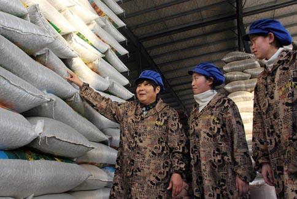
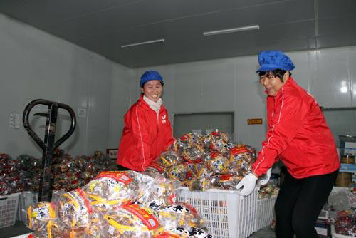
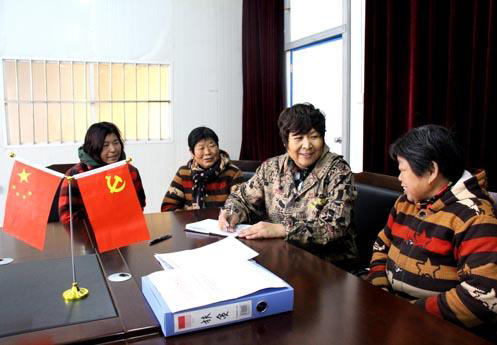

魏秀兰：诚信“铁锅”炒30年 宁可“赔款”绝不失言
人物简介：魏秀兰，女，1964年5月13日生，亳州市人大代表，现任安徽黑娃食品科技有限公司总经理。她先后荣获“涡阳县第二届十大民营工业企业创业之星”、安徽省三八红旗手；“2011年度涡阳县创业明星”、“第二届亳州农业青年致富带头人”、“2014年首届安徽‘农金杯’创业明星”及“2017年安徽省现代农业杰出贡献企业家”等光荣称号。
事迹简介：她从事炒货行业30年，靠诚信“铁锅”起家，每个“铁锅”上都印有“诚信铁锅”字样；她面对客户庄严承诺，每一粒炒货都必须饱满，从不失言；企业连续捐款捐物380余万元，帮助贫困家庭近300多户。她就是安徽黑娃食品科技有限公司总经理魏秀兰。从一个铁锅，一把锹，到资产千万。魏秀兰深有感触地说：“我从一个拉板车卖瓜子的农村妇女出身，到现在开公司，离不开诚信二字，我‘铁锅’里炒的不是干果，而是‘诚信’。”
正文：
诚信“铁锅”炒了30年
今年54岁的魏秀兰，从上世纪九十年代从农村来到涡阳县城寻求生计，靠着一口诚信“铁锅”卖炒货起家。“我的铁锅跟着我十几年，每一锅炒货炒的都是诚信，都是客户的信任。”魏秀兰介绍，为了养活自己，起初她开始推着小板车在大街上叫卖花生、瓜子。由于她诚实做人，诚信经营，受到了当地群众和行业的一致好评！

日子久了，生意虽然不错，但她觉得还可以开拓更大的市场。选择厂址、开办公司、创办品牌……魏秀兰靠着一股不服输的劲头拼搏，更靠着一口诚信“大铁锅”站住了市场。从做生意第一天开始，她就在心里暗暗许下承诺：做良心炒货，吃放心食品。就是靠着这个信念和承诺，她成为炒货和干果界的“大姐大”。2003年，魏秀兰注册了安徽黑娃炒货有限责任公司。公司成立当天，魏秀兰就严抓质量和诚信，绝不让一粒伪劣产品出厂，绝不让一颗瘪子流入市场。“魏长香”、“黑娃”两个牌被评为中国著名品牌。
在发展过程中，魏秀兰始终秉承诚信第一、品质至上的经营思路，与工人同吃同住，对客户、对工友、对群众承诺的事从不失言。在她的带领下，成立不到5年的公司已成为涡阳炒货行业的龙头老大，拥有专用商标两个，30多种产品畅销几十个大中小城市，年销售额达到8000万元，解决就业岗位70余个，2019年被国税局评为“A级”纳税企业。
从一个走街串巷叫卖瓜子、花生的农民，到一个市级龙头企业的负责人，魏秀兰用诚信演绎别样精彩。多年来，公司先后获得“安徽省诚信企业”、“安徽省工业‘三品’示范企业”、“安徽省专精特新中小企业”、“亳州市农业产业化重点龙头企业”和“亳州市守合同重信用企业”。
宁赔30万不让瘪子流市场
魏秀兰常常挂在嘴边的一句话：要做失信人员的“终点站”，不做失信人员的“接力棒”。魏秀兰从事炒货几十年来，多次被骗，但每次她都坦然面对，从不把这种失信行为继续蔓延。在魏秀兰的笔记本扉页清晰地看到：干果质量的失信就是人品的失信，宁愿自己一颗瓜子不卖，绝不能让质量有半点含糊。

2000年初，魏秀兰到新疆等地收购瓜子原料，看到农户辛苦种植的葵花籽时心里十分感动，决定要从这里把原料拉回厂里加工。但由于经验缺乏，她拉回来的8大卡车瓜子原料，到厂里一看，眼泪顿时流了下来，原来所有瓜子均被黄沙掺假、瘪子到处都是，魏秀兰心里十分伤心。200多吨的货，如果简单挑选加工，会减少损失，如果把所有瘪子筛掉损失不可想象。看着几大车劣质原料时，魏秀兰语气坚定地说：“别人骗我，我不骗人。宁可赔钱，也绝不让一颗劣质瓜子流入市场，不让顾客吃到一个瓜子瘪子。”随后，魏秀兰安排公司所有员工，用机器筛选、用人工一粒粒挑拣，所有程序下来，这些原料整整损失了30多万元。
说出去的话，就是泼出去的水。承诺的事情就要想尽一切办法做到。这是魏秀兰的做人做事原则。2017年初，魏秀兰到包点扶贫村参加扶贫活动时看到，马店集镇前贾村几十户农民正在卖蚕豆，看到魏秀兰的到来，他们很激动地说：“魏总，你能不能把我们的蚕豆收购了？”魏秀兰看着一张张朴实的面容，心里十分同情。她对村民说：“乡亲们，咱们的蚕豆目前销售不太好，不能大批量进行收购，大家可以尝试一下种植瓜蒌，我们安排种子和技术指导，保证让大家比种植蚕豆挣钱。”魏秀兰的一句承诺，村民十分激动。
承诺让老百姓挣钱，就要想办法实现自己的诺言。2018年，她在马店集镇一个村建立了扶贫基地，鼓励300多个贫困家庭种植瓜蒌，还经常安排专家和技术人员进行指导，并按照市场价一斤高一块钱的价格全部回收，每个贫困户种植瓜蒌加上在地里干活，年收入达到一万多元。一年来，在魏秀兰的帮助下，贫困户种植的瓜蒌丰收了，老百姓的口袋里鼓了。魏秀兰经常说：“企业要扩大经营长期发展，只要诚实守信，敢于担当，不管做什么生意，就没有干不成、做不好的！”
近年来，黑娃食品也先后被评为“安徽省名牌产品”、“安徽省著名商标”及“2017中国名优农产品暨农业产业化交易会参展产品金奖”等殊荣。她凭着“宁可亏了自己，也不会失了诚信”的理念，挣得了人生“诚信金钱”。
连续捐款捐物380余万元
扶危济困，乐善好施是黑娃公司的优良传统。创业成功后的魏秀兰，始终把职工为亲人，把困难群众当家人，把贫困孩子当做自己的孩子。魏秀兰先后资助20多名贫困大学生顺利入学。马店集镇前贾村相彪家庭经济困难，因交不起学费，儿子相号召面临失学，魏秀兰得知后，第一时间把学费送到了相彪家里，拿着学费的他，激动地一下子跪在了地上，流着泪说：“魏总，你的恩情，我一辈子也报答不完啊！”在魏秀兰的资助下，相号召顺利地走进了省级示范高中的大门。

在抓好企业发展的同时，魏秀兰还长期开展扶贫帮困助学活动，她在企业里倡导“富户帮穷户、共同富裕路”的号召，扶贫帮困。妥善安置大高村贫困户39户就业劳动，每年提供20000元的助学帮扶基金，保证该村贫困家庭子女考上高中和高等院校都能顺利完成学业。几年来，魏秀兰先后投入捐资助学资金已达60余万元，企业累计已向社会捐助钱物达380余万元，受到了社会各界的一致好评。
30年来，魏秀兰凭借重质量、守信誉的经营理念，打造出了享誉全国知名的“黑娃炒货”知名品牌。她用农村妇女朴实无华和创新思维，把“诚信瓜子”送上全国“大舞台”，成就了一个个知名大品牌。
 社会信用体系建设联席成员单位
社会信用体系建设联席成员单位
 友情链接
友情链接